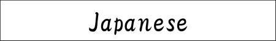

There are no urgent calls at this time.
4/07 opening ceremony
4/10 Entrance ceremony
4/20 field trip
4/07 We held the opening ceremony.
4/01 The new year has begun.
3/21 A graduation ceremony was held.
